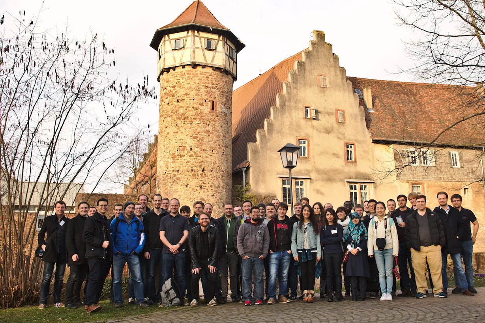
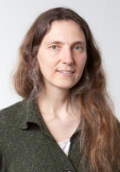

About
The FOSD meeting is an informal meeting designed to bring together researchers working on feature-oriented software development (FOSD). It started in 2009 and has since evolved and expanded in what now is an international event. Since 2014, the meeting is held in English. More details about FOSD and previous FOSD meetings can be found at http://fosd.net. For the FOSD2016 Workshop, please visit FOSD'16 WORKSHOP
The format of the FOSD meeting consists of short presentations from each participant (approx 15 min) with plenty of time for discussion. Young researchers (graduate and undergraduate students), as well as more senior community members, present their research, provide and get feedback from others, engage into discussions and establish new collaborations. FOSD is a place for discussion, not a publication venue. Participants can present previously published work as well as unpublished work, including early ideas and work in progress. The key is to encourage discussions, to receive feedback and to create a network for new collaboration
An invited talk will be given by Julia Lawall (INRIA)
Every year there is an informal competition, FOSD Cool Wall, where everyone votes for the coolest name of a tool that has been presented during the meeting.
The deadline for the abstract is January 16th, 2017. We will provide notifications one week later. If you need more lead time for visa application or travel planning, reach out to us.
Your Stay
The fee includes your stay, all meals, the social event on Wednesday afternoon and a bus transfer to Darmstadt main station on Friday. Please just ask me for your personal printout of the receipt of your payment during the next week. IMPORTANT: We decided to exclude drinks from the fee to keep the overall costs moderate (the only exception is coffee and tea during the coffee breaks). You can purchase all kinds of drinks at any time at the hotel during your stay (payment cash or by credit card). Since tap water is of very good quality in Germany, we recommend you to bring with you a drinking bottle which you can refill in your room. In addition, we will try to organize some drinks at cost price for the evening time.
Your Talk
This year, every participant has an allocated slot of 25 minutes. Please prepare slides that do not require more than 13 minutes of presentation such that we have at least half of the slot for discussions. We will enforce the 13 min time limit strictly.
 View in high qualityLocation & Travel Information
The FOSD meeting 2017 will take place in the beautiful Odenwald area near Darmstadt. We will stay at Hotel Siegfriedbrunnen in Grasellenbach: hotel website
Hammelbacher Straße 7, D-64689. Grasellenbach, Germany
IMPORTANT: On Monday 13th, dinner will be available from 6:00 pm to 9:00 pm. If you already know that you arrive later than 9:00 pm and you did not already give us this information in the registration sheet, please let us know. If you arrive later than midnight on Monday, you can get your room key from the bar keeper.
Arrival by car
If you are traveling by car, follow the instructions under: link
Free parking options are available at the hotel.
Arrival by train
If you are traveling by train, please book a connection to Heppenheim (Bergstraße). From Heppenheim main station, a regular bus service goes to Grasellenbach. Take Odenwald bus line 667 from bus stop „Heppenheim Bahnhof“ and get off the bus at stop „Nibelungenhalle“ (from here just follow the signs to the hotel): bus schedule
If you are traveling in a group, we may also coordinate the booking of a taxi for you from Heppenheim main station to Grasellenbach. Please let us know.
Arrival by plane
If you are traveling by plane, please book a flight to Frankfurt Airport. From here, a bus service frequently goes to Darmstadt main station: Airliner bus schedule
From Darmstadt main station, please go by train to Heppenheim (Bergstraße). The Regionalbahn RB 15349 to Heidelberg departs frequently from Darmstadt main station and takes about 30 minutes to Heppenheim (Bergstraße). You can buy a ticket for the train at Darmstadt main station. Further information can be found here: Deutsche Bahn
From here, see instructions for arrival by train.
Departure
For those of you traveling by train or by plane, we arrange a bus transfer from Grasellenbach to Darmstadt main station (arrival at 2 pm). From here, you can proceed your trip home either by train or take the bus service to Frankfurt Airport.
Keynote Speakers
-

Julia Lawall personal website
Julia Lawall is a Senior Researcher at Inria Paris. Her research interests are in the area of improving the quality of infrastructure software, using a variety of approaches including program analysis, program transformation, and the design of domain-specific languages. She is the main developer of the tool Coccinelle for program matching and transformation in C code. Over 1200 patches based on her research have been accepted into the Linux kernel.
Keynote: Practical impacts of variability in the Linux kernel
Over the past 10 years, we have been developing the Coccinelle program matching and transformation tool for C code and using it to contribute to the development of the Linux kernel. Coccinelle makes it easy to search for patterns and make transformations via a patch-like specification language, making it possible to perform various kinds of evolutions at a large scale. Performing these evolutions safely, however, requires a reliable and consistent view of kernel properties, and obtaining such a view is hindered by variability. In this talk, we introduce Coccinelle and some of its applications, and we explore two impacts of variability on its use: the ability to infer properties of functions that may have multiple definitions according to the configuration chosen, and the ability to ensure that transformed code has actually been validated by the compiler.
Schedule Tuesday, 14th
Session: 8:30 - 10:00, Chair: Sven Apel
- Christian Kästner, Sven Apel, Malte Lochau: Opening
- Nobert Siegmund: Automated Configuration of Machine-Learning Software
- Miguel Velez: Exploiting Structure and Behavior of Highly Configurable Systems to Measure Performance
- Jeho Oh: Statistical Searching for Optimal Product Line Configurations
Session: 10:40 - 12:20, Chair: Norbert Siegmund
- Paul Gazzillo: Enabling Variability-Aware Software Tools
- Shurui Zhou: INFOX: Identifying Features from Forks
- Sandro Schulze: Migrating clown-and-own SPLs using variant-preserving refactorings
- Jens Meinecke: Understanding Variations in Program Executions with Variational-Control-Flow Graphs
Session: 14:00 - 15:40, Chair: Alexander Grebhahn
- Sven Apel: Distribution-Aware Sampling
- Sebastian Krieter: On Making T-Wise Sampling More Efficient
- Christian Kaltenecker: Comparison of Analytical and Empirical Performance Models: A Case Study on Multigrid Systems
- Sven Peldszus: Specification and Verification of Security Requirements on Software Product Lines with UMLsec
Session: 16:10 - 17:50, Chair: Shurui Zhou
- Clément Quinton: Feature-Oriented Learning for Self-Adaptive Systems
- Markus Weckesser: A DSPL-based Approach for Context-aware Self-Optimization in Self-Adaptive Systems
- Mahsa Varshosaz: Expressiveness and succinctness of basic behavioral models for software product lines
- Lars Luthmann: Software Product Lines with Unbounded Parametric Real-Time Constraints
Schedule Wednesday, 15th
Session: 8:30 - 10:40, Chair: Christian Kaestner
- Julia Lawall: Practical impacts of variability in the Linux kernel (Keynote)
- Stephan Lukasczyk: Variability-Aware Model Checking of Real-World Configurable Software Systems: An Experience Report
- Stefan Krüger: Mastering the Variability in Crypto APIs
Session: 11:10 - 12:50, Chair: Sofia Ananieva
- Florian Sattler: Variability-aware interaction analysis in LLVM using VaRA
- Jacob Krüger: Using Pattern Recognition to Identify Feature Dependencies
- Gustavo do Vale: Granularity of Developer Coordination in Variant-Rich Software
- Daniel Strüber: Variability-based model transformation: variation-aware rule application and rule merging
15:00 - 20:00: Social Event
Schedule Thursday, 16th
Session 8:30 - 10:10: Chair: Mahsa Varshosaz
- Thorsten Berger: Maintaining Feature Traceability with Embedded Annotations
- Berima Kweku Andam: FLOrIDA: Feature LOcatIon DAshboard for Extracting and Visualizing Feature Traces
- Thomas Bock: Synchronous Development in Open-Source Systems: File-based, Function-based, and Feature-based
- Alexander Knüppel: Is There a Mismatch Between Real-World Feature Models and Product-Line Research?
Session 10:40 - 12:20: Chair: Florian Sattler
- Malte Lochau: N-way Program Merging for Efficient Test Coverage of Configurable Programs
- Wilhelm Hedmann: Intention-based variant merging
- Damir Nesic: Modeling, browsing and querying product line assets data using RDFS
- Timo Kehrer: Exploiting Traditional Versioning Operators for Managing Variability in Model-based Software Systems - Experiences and Future Perspectives
Session 14:00 - 15:40: Chair: Gustavo do Vale
- Thomas Thüm: Why Should We Care about Similarity of Satisfiability Problems?
- Andreas Stahlbauer: Towards Compositional Model Checking of Configurable Programs: Scopes of Safety Properties
- Sofia Ananieva: Variants Management in Multi-View Modeling
- Lukas Linsbauer: Variability-Aware and Distributed Version Control System
Session 16:10 - 17:50: Chair: Sebastian Krieter
- Daniel Hinterreiter: Distributed and Feature-Oriented Engineering in Software Ecosystems
- Juliana Alves Pereira: A Content-Based Recommender System for Configuration of Extended Product Lines
- Sascha Lity: Delta-Oriented Product-Line Evolution
Schedule Friday, 17th
Session: 8:30 - 9:45, Chair: Andreas Stahlbauer
- Michael Nieke: Preserving Product Behavior of Evolving Software Product Lines
- Alexander Grebhahn: A Comparison Study on the Influence of Sampling and Learning Approaches on the Accuracy of Performance Predictions
- Jean Melo: Contextual Variability Skeleton for Understanding Changes in Highly-Configurable Systems
Session: 10:20 - 12:00, Chair: Christian Kaltenecker
- Christian Kästner: Transfer Learning for Accelerating Predictive Model Learning in Highly Configurable Systems
- Mustafa Al-Hajjaji: Delta-Oriented Product Prioritization for Similarity-Based Product-Line Testing
- Hendrik Speidel: APE (a productive environment): a task runner with built-in support for feature oriented software development
- Christian Kästner, Sven Apel, Malte Lochau: Closing
Participants
We are glad to have the following participants.
| Name | Title | University |
|---|---|---|
| Alexander Grebhahn | A Comparison Study on the Influence of Sampling and Learning Approaches on the Accuracy of Performance Predictions | University of Passau |
| Alexander Knüppel | Is There a Mismatch Between Real-World Feature Models and Product-Line Research? | TU Braunschweig |
| Andreas Stahlbauer | Towards Compositional Model Checking of Configurable Programs: Scopes of Safety Properties | University of Passau |
| Berima Kweku Andam | FLOrIDA: Feature LOcatIon DAshboard for Extracting and Visualizing Feature Traces | Chalmers University Gothenburg |
| Christian Kaltenecker | Comparison of Analytical and Empirical Performance Models: A Case Study on Multigrid Systems | University of Passau |
| Christian Kästner | Transfer Learning for Accelerating Predictive Model Learning in Highly Configurable Systems | Carnegie Mellon University |
| Clément Quinton | Feature-Oriented Learning for Self-Adaptive Systems | Politecnico di Milano |
| Damir Nesic | Modeling, browsing and querying product line assets data using RDFS | KTH Stockholm |
| Daniel Hinterreiter | Distributed and Feature-Oriented Engineering in Software Ecosystems | Johannes Keppler University Linz |
| Daniel Strüber | Variability-based model transformation: variation-aware rule application and rule merging | University of Koblenz-Landau |
| Florian Sattler | Variability-aware interaction analysis in LLVM using VaRA | University of Passau |
| Gustavo do Vale | Granularity of Developer Coordination in Variant-Rich Software | University of Passau |
| Hendrik Speidel | APE (a productive environment): a task runner with built-in support for feature oriented software development | Schnapptack |
| Jacob Krüger | Using Pattern Recognition to Identify Feature Dependencies | Otto von Guericke University Magdeburg |
| Jean Melo | Contextual Variability Skeleton for Understanding Changes in Highly-Configurable Systems | Carnegie Mellon University |
| Jeho Oh | Statistical Searching for Optimal Product Line Configurations | University of Texas |
| Jens Meinicke | Understanding Variations in Program Executions with Variational-Control-Flow Graphs | Otto von Guericke University Magdeburg |
| Juliana Alves Pereira | A Content-Based Recommender System for Configuration of Extended Product Lines | Otto von Guericke University Magdeburg |
| Lars Luthmann | Software Product Lines with Unbounded Parametric Real-Time Constraints | TU Darmstadt |
| Lukas Linsbauer | Variability-Aware and Distributed Version Control System | Johannes Keppler University Linz |
| Mahsa Varshosaz | Expressiveness and succinctness of basic behavioral models for software product lines | Halmstad University |
| Malte Lochau | N-way Program Merging for Efficient Test Coverage of Configurable Programs | TU Darmstadt |
| Markus Weckesser | A DSPL-based Approach for Context-aware Self-Optimization in Self-Adaptive Systems | TU Darmstadt |
| Masoumeh Taromirad | tba | Halmstad University |
| Michael Nieke | Preserving Product Behavior of Evolving Software Product Lines | TU Braunschweig |
| Miguel Velez | Exploiting Structure and Behavior of Highly Configurable Systems to Measure Performance | Carnegie Mellon University |
| Mustafa Al-Hajjaji | Delta-Oriented Product Prioritization for Similarity-Based Product-Line Testing | Otto von Guericke University Magdeburg |
| Norbert Siegmund | Automated Configuration of Machine-Learning Software | University of Weimar |
| Paul Gazzillo | Enabling Variability-Aware Software Tools | Yale University |
| Sandro Schulze | Migrating clown-and-own SPLs using variant-preserving refactorings | Otto von Guericke University Magdeburg |
| Sascha Lity | Delta-Oriented Product-Line Evolution | TU Braunschweig |
| Sebastian Krieter | On Making T-Wise Sampling More Efficient | Otto von Guericke University Magdeburg |
| Shurui Zhou | INFOX: Identifying Features from Forks | Carnegie Mellon University |
| Sofia Ananieva | Variants Management in Multi-View Modeling | FZI Karlsruhe |
| Stefan Krüger | Mastering the Variability in Crypto APIs | University of Paderborn |
| Stephan Lukasczyk | Variability-Aware Model Checking of Real-World Configurable Software Systems: An Experience Report | University of Passau |
| Sven Apel | Distribution-Aware Sampling | University of Passau |
| Sven Peldszus | Specification and Verification of Security Requirements on Software Product Lines with UMLsec | University of Koblenz-Landau |
| Thomas Bock | Synchronous Development in Open-Source Systems: File-based, Function-based, and Feature-based | University of Passau |
| Thomas Thüm | Why Should We Care about Similarity of Satisfiability Problems? | TU Braunschweig |
| Thorsten Berger | Maintaining Feature Traceability with Embedded Annotations | Chalmers University Gothenburg |
| Timo Kehrer | Exploiting Traditional Versioning Operators for Managing Variability in Model-based Software Systems - Experiences and Future Perspectives | Politecnico di Milano |
| Wilhelm Hedman | Intention-based variant merging | Chalmers University Gothenburg |
VISA Information
If you are a non EU citizen, please find if you need a visa for entering Germany and Schengen Area. A list for citizen of countries that need a visa can be found here Do I need a visa?.
Contact
For abstract submission or any other questions please send an e-mail to Malte Lochau: malte dot lochau at es dot tu-darmstadt dot de.